A Breath of Life
Inspired by timelapses of flowers growing from small sprouts, to budding stems, and then opening up their petals as fully grown flowers; I set myself to building a robotic flower to emulate nature's beauty. The robotic flower is initially limp and collapsed on the ground. After a breath is detected by a humidity sensor, the flower becomes firm and stands up, then the flower petals open. As a result, it appears as if the user's breath on the flower brought it to life and hence the title "A Breath of Life". Below is a video of the final design.
Demonstration of Final Design
The flower design is inspired primarily from push toys. Push toys are little puppets made of many small pieces connected together by a string or series of connected strings. The string is routed through the parts and is then anchored at a spring-loaded plate at the base of the toy. The force of the spring resisting compression pulls the string through the pieces, holding the toy structure rigidly in shape. Using your thumb to push on the spring-loaded plate compresses the spring causing the string to slacken and the pieces of the toy structure to separate. The toy structure then loses its shape and collapses. This same principle was used for the design of the flower. When the string connecting the flower parts is loose, the flower lies limp and collapsed. When the string connecting the flower parts is pulled taut, the flower strengthens and stands up. The opening of the flower petals is also executed under this same string-pulling mechanism, but in a more complicated manner than traditional push toys. Below are the push toys we have at home that inspired me to take the same direction with the flower design.
Push Toys at Home
Flower Head Prototyping
Designing the flower such that the petals opened when the flower stood up and closed when the flower was limp was by far the most challenging task in this design. During my initial brainstorm, I tried to think of as many ways possible that the flower petals could be opened using only the actuation of the string pulling the flower pieces together. As I was trying to keep the design minimal, using a separate motor to move the petals was out of the question. Below are some of my preliminary sketches for the design and of different flower head mechanisms through which the petals could be opened. I imagined the flower would stand atop a small box hiding all the electronics including a rechargeable battery that would allow the flower to operate untethered.

Robotic Flower Concept Sketch
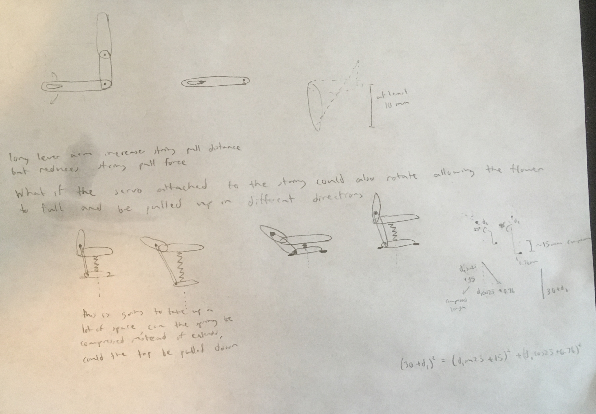Sketches of Potential Flower Head Mechanisms
In selecting a flower head mechanism to use, my main requirement was to keep the mechanism as simple as possible and use just a single piece of string if possible. The concept that I ended up going with was to use a linkage system that would cause the petals to rotate as a spring loaded plate in the flower head was pulled down. With this concept in mind, I then went to mocking up prototypes in Solidworks CAD and 3D printing them. This process took a long time before I had a flower head mechanismn that functioned successfully. In total I ended up printing ten different prototypes.
This prototyping process took so long because I encountered a variety of different challenges along the way and had to learn many good lessons. The key issue I faced was poor translation from a pristine working system in CAD to a physical prototype produced using the imprecise manufacturing method of 3D printing. In response to this issue, I trialed different tolerance levels between interfaces (a gap of 0.3 mm seemed to work best for most interfaces), used a number of different 3D printers, and tested different printer settings using several different slicing softwares. This was a good reminder that manufacturing is not merely a short step taken at the conclusion of a design process, but rather an intensive process that determines how the design will manifest as a real working product. Below are pictures and videos of eight of the ten different prototypes.
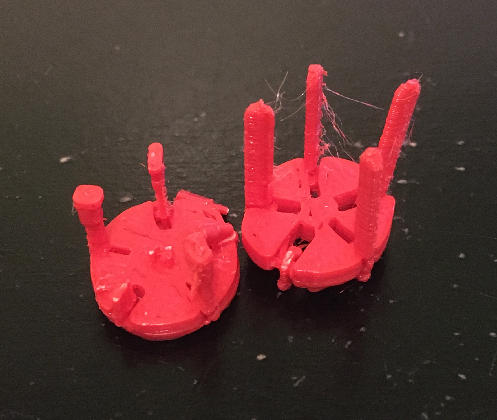 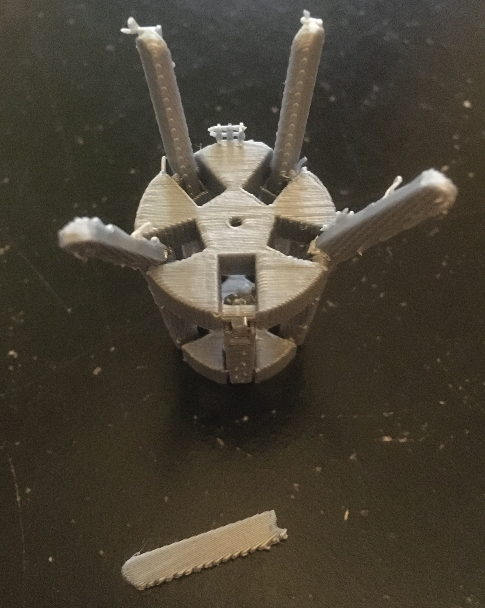First (left) and Second (right) Prototypes
The first prototype was much too small, leading to poor print quality on the fine details of the flower head mechanism. The circular base plate had a diameter of approximately 6 mm, while later prototypes used a diameter closer to 30 mm. Although the print quality was better at the larger scale with the second prototype, the interface tolerances used in the design were too small. Additionally, I had attempted to print the entire assembly as one part with all joints printed in place. Printing joints in place using a small amount of support material that can be torn out later is an exciting benefit of the 3D printing manufacturing process as it helps to forgo additional steps in fastening parts together. However, when the tolerances are too small as in the 2nd prototype, the joints fuse together preventing independent motion of parts within the assembly.
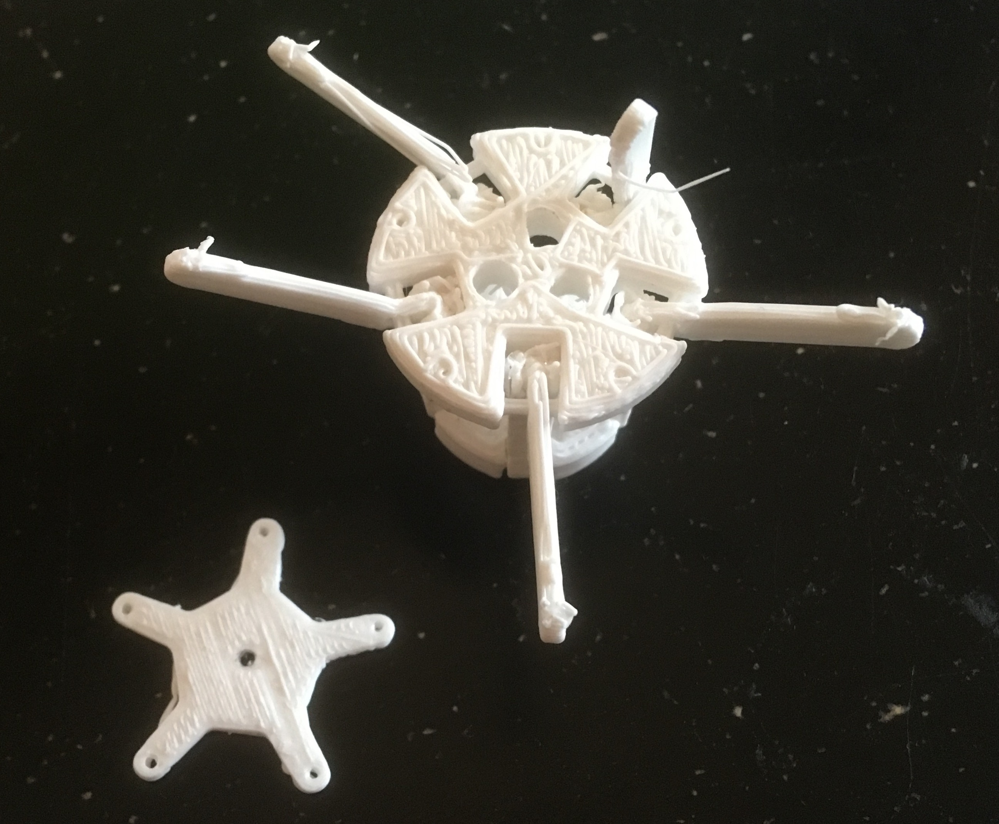Third Prototype
In the third prototype, I increased the gaps between interfaces slightly to reduce the likelihood of joints fusing together during printing. Nonetheless, many of the joints still fused together. When I bent the petal links back and forth to break off the support material at the joints, many of the links broke instead. Additionally, I added three holes to the upper plate of the flower head for springs and a capping piece to hold the springs in place in the flower head.
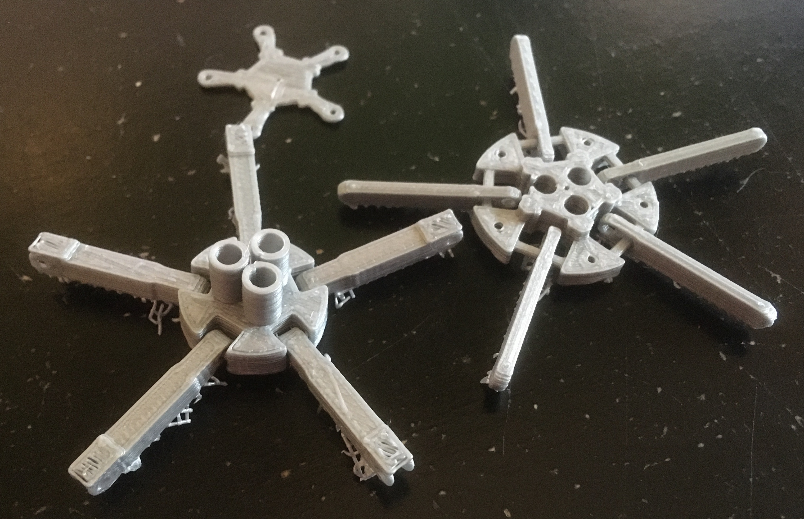 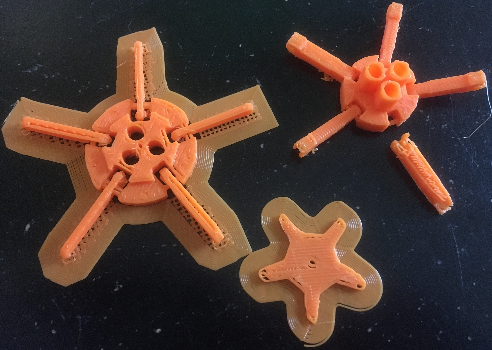Fourth (left) and Fifth (right) Prototypes
To combat the low print quality, I broke the flower head assembly into two subassemblies that could both be printed flat. This change diminished the effect of compounding print error by reducing the number of print layers significantly. Additionally, the amount of support material required during the printing process was also much lower. Ball and socket joints were used to connect the flower petal links to the lower links on the flower head assembly. Note the rectangular caps on one end of the joint connection on the lower link which prevents the flower petals from folding too far inwards. Still the print quality was rather low and the subassemblies could not be assembled into one flower head assembly. The print quality on the fifth prototype was so horrendous I didn't even bother removing the brim support around some of the parts. Even when using the exact same printer settings on the same model of printer, each printer would perform slightly different. Based on past experience with 3D printers, I assume these differences are most likely due to different bed levelings and different levels of wear on the printers affecting how smoothly filament flows out of the extruder or how smoothly the extruder slides back and forth on the belting and power screw systems.
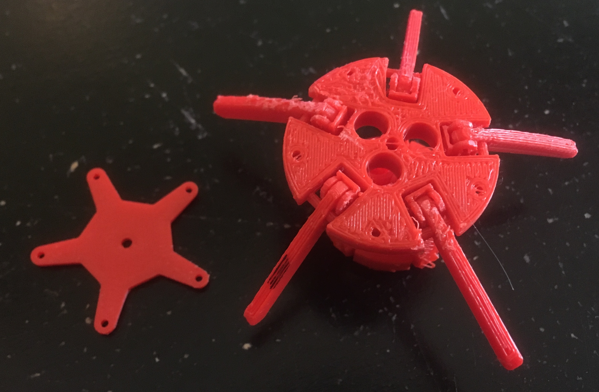Sixth Prototype
In the sixth prototype, I tried printing on a totally different model of 3D printer and performed a quick releveling before printing. The print quality was better and I was able to connect the two subassemblies together into one flower head assembly. Note the black sharpie mark on one of the petal links which I used along with a corresponding mark on one of the lower links to align the two subassemblies before I began connecting the links as only one arrangement appropriately aligned all five links and all three spring holes. After a little bit of sanding, smooth rotation at the joints was possible.
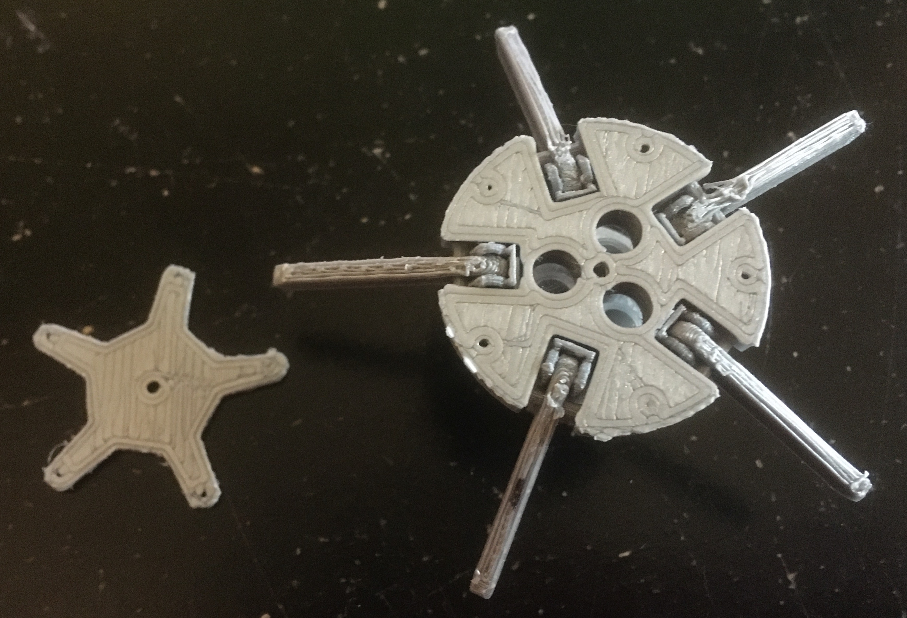Seventh Prototype
Simultaneously printed with the sixth prototype with some slight sizing adjustments, I noticed in the seventh prototype as I had in the sixth that when the upper plate rose as the petals folded inwards some of the lower links would move out of alignment with the joint holes in the upper plate. This prevented easy rotation of the petal links as the lower links would collide with the upper plate every so often. I returned to the original printers I was using after I noticed the printer I used for the sixth prototype had a warped bed. I also tested the fit of my springs, collected from retractable pens which I had made gross measurements of with my ruler, in the three spring holes and found the holes to be just a tad too small.
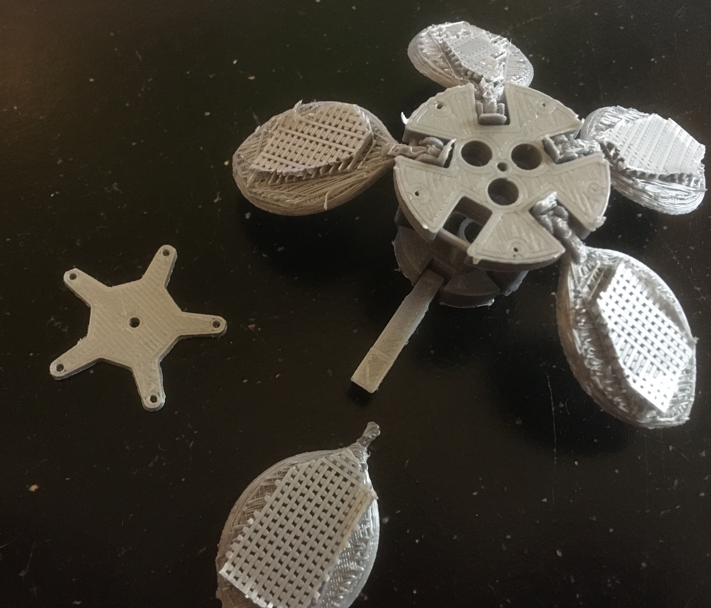Eighth Prototype
In the eighth prototype, I increased the spring hole diameter slightly to accomodate the springs, lengthened the caps on the lower links to prevent misalignments, and added petals to the petal links. I had tried adding some fine texture to the surface of the petals for aesthetic purposes which turned out to be a mistake as it made it extremely difficult to remove the support material from the petal surfaces. Additionally, I think I may have not printed the parts flat on the bed surface leading to poor print quality overall. This resulted in one of the petal links snapping off when I tried to rotate it.
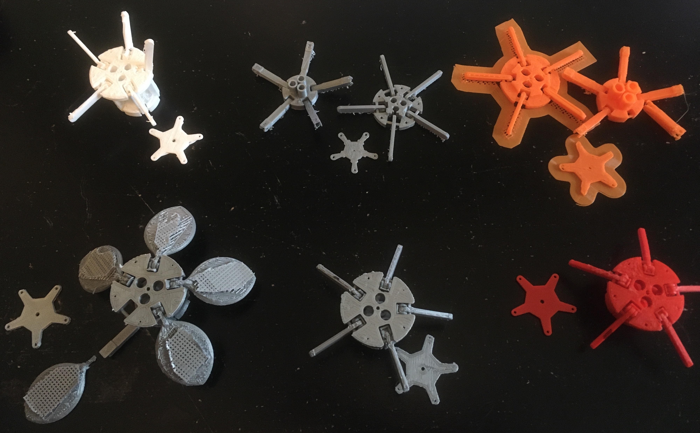Prototypes (3rd through 8th)
First System Prototype
Having reached a point in the flower head prototyping where I was confident that my next flower head prototype would function as expected from the design, I set to building a full prototype of the system. This first system prototype included the flower head (with springs embedded), flower stem pieces, and a box containing the humidity sensor, servo motor (for pulling the string a consistent distance), microcontrollers, and wiring between components. To justify all the work I had done in prototyping the flower head mechanism, I wrapped this first system prototype into an assignment for my electronics class. The goal of the assignment was to create some kind of electromechanical artpiece using a sensor node and actuator node communicating with one another through WiFi. In my case, the sensor node was composed of a DHT11 humidity sensor and an Arduino MKR WiFi 1010 acting as the client, while the actuator node was composed of a DFRobot SER0039 Hobby Servo and a Raspberry Pi 4 Model B acting as the server. Having two microcontrollers communicate in this system provided no additional benefit to just using one microcontroller simulataneously running the sensor and actuator node, but I did it nonetheless for the sake of meeting the assignement requirements.
In the ninth prototype of the flower head, I lengthened the caps on the lower links even further and removed the fine texture on the petal surfaces to ensure the support material could be removed easily. Below is an image showing the processing of the 3D printed flower head and stem pieces. I trimmed off the brim support structure of the prints and sanded down areas where the laying down of filament had resulted in rough patches.
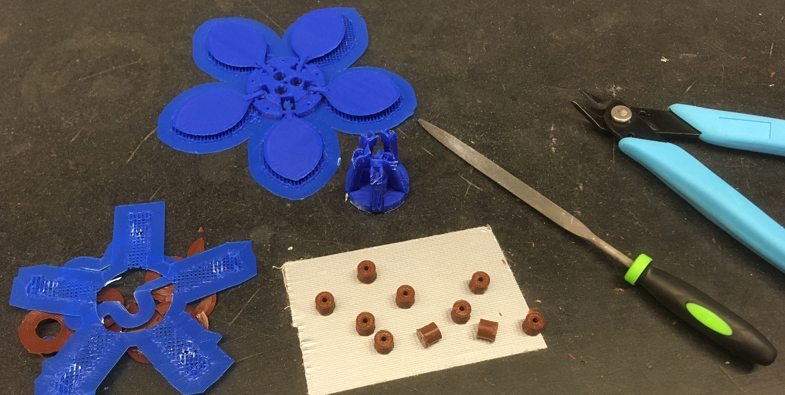Processing First Full Flower Prototype
After finishing my first system prototype, I put together a short video (shown below) presenting my completed assignment for my electronics class.
Demonstration of First Prototype
Second System Prototype
Seeing the idea I thought up come to life, even if it was a little frightening to observe, was reassuring that with just a few more steps I could repackage the robotic flower as a present for my parents just in time for Christmas. The final prototype had no need for the two microcontrollers, so I decided to just use the Arduino. With some advice from more experienced makers at Tufts, I moved to a new slicing software. Additionally, I decided to add a rechargeable LiPo battery to the system allowing it to be enjoyed in places other than next to the wall outlet.
3D Printed Flower Head
The new slicing software I started using to translate CAD files to 3D-printable files was PrusaSlicer (the official slicing software for the printer), instead of using the OctoPrint software provided on the web interface for the 3D printers. Not only were the default printer settings better when using this new software, but the slicing engine also provided me with more parameters I could change to improve the print quality. The resulting tenth prototype of the flower head had significantly higher quality. If I had more time to print another flower head, I would have used finer tolerances at the joints as the gaps I had put into the design to accomodate printing error were now glaringly visible.
Another change I made in the tenth prototype of the flower head was to reduce the height of the flower head to make it appear more natural and delicate instead of as a heavy contraption. This aesthetic change also led to the functional benefit of the springs being under higher compression in the flower head, ensuring the flower petals would close fully when the flower was not standing up which had been an issue with the ninth prototype. However, the extent to which I shrunk the flower head from the ninth to tenth prototype was likely too extreme. With the additional compression of the springs, the motor had to work much harder to pull the string through the flower to open the petals and would stall out. As before, simply printing the flower head parts was not the end of the manufacturing process. I trimmed, filed, and sanded until the surfaces of the flower head were smooth and each joint was able to rotate freely. Below are some pictures of this process.
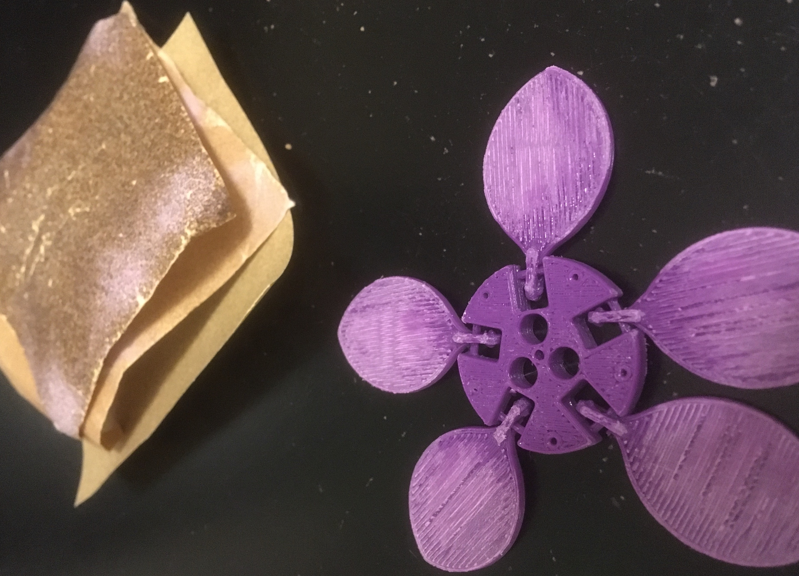 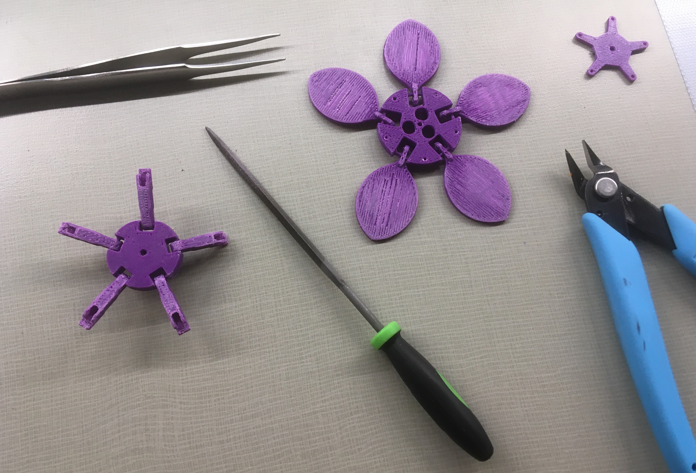Processing Tenth Flower Head Prototype
As with the ninth prototype of the flower head, I then added in the three pen springs securing them in the flower head by bolting down the star shaped cap piece over the top of the flower head. Due to the increased spring compression and reduced friction in the tenth prototype, the flower head became quite prone to explosion. If touched in a way that misaligned the joints, the springs would rapidly tear the ball and socket joint connections apart. And so this flower truly became a delicate flower, but not quite how I had originally imagined. Below is a picture of the flower head assembly process and a picture of the flower head after explosion. The flower head and stem were spray painted pink and green respectively to look more flower-like than their original filament colors of purple and white respectively. I was also hoping that a coating of spray paint over the 3D printed parts would smooth the surface texture further. This occurred to a small extent, but in retrospect I probably should have used some kind of filler before spray prainting over the part. An unfortunate consequence of the spray painting was that the flower parts would stick to one another instead of separating properly when the string was loose, preventing the flower from falling down fully limp.
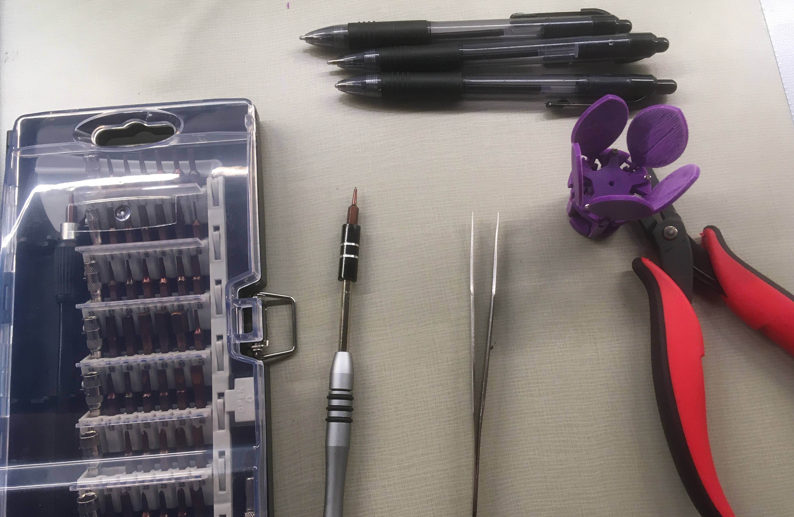 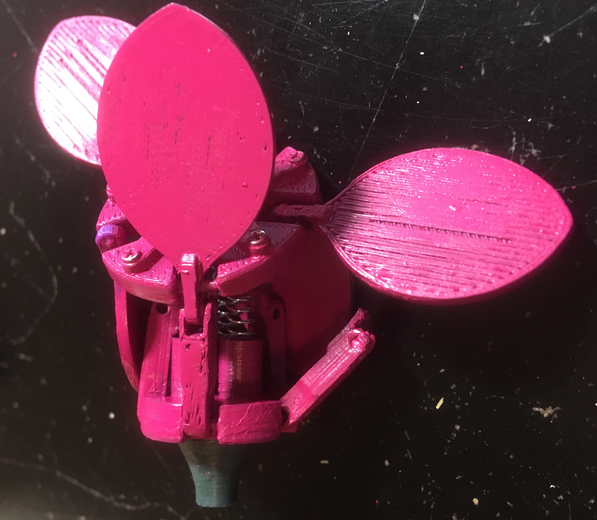Assembly of Tenth Flower Head Prototype
Box of Electronics
The first system prototype was dependent upon an external power source such as an outlet or computer. As a result the robotic flower could only be enjoyed a few feet away from such a power source, tethered by an unsightly USB cable. To overcome this issue, I purchased a LiPo battery and power switch off of Amazon. The 2500 mAh LiPo battery I ordered had a JST connector that plugged directly into the Arduino MKR WiFi 1010 (designed for use in projects with LiPo batteries). The wires on the battery were incorrectly installed in the flipped orientation which wouldn't have been an issue if the connector could also be flipped, but the JST connector had only one unique orientation for which it would fit. Since I was already planning to cut one of the wires coming from the battery to solder in two wires leading off to the power switch, it wasn't too much work to also cut, flip, and solder the wires coming from the battery. To reduce the likelihood of overheating the battery and thereby damaging it, I dropped the temperature of the soldering iron from 720 degrees Fahrenheit, the temperature at which I was usually soldering, to 500 degrees Fahrenheit. Below is a picture of the completed soldering job of the battery secured with a nest of clamps. I then wrapped the soldered connections with electrical tape to protect them and medical tape to secure the electrical tape. The result was definitely sketchy, but it worked consistently.
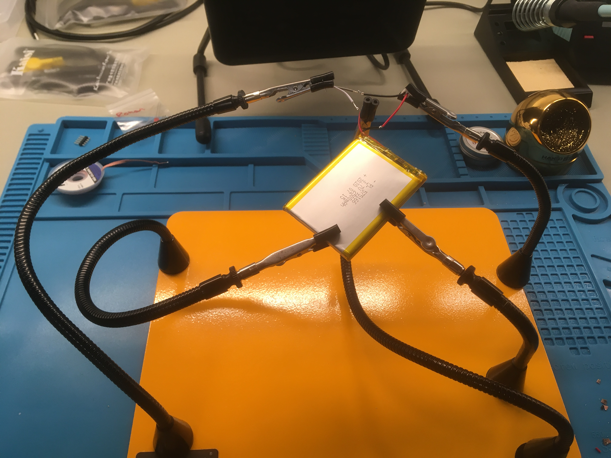Soldering Battery Wires
To house the LiPo battery along with the other electronics, I designed a small box. As with the first system prototype, the walls of the box were laser cut given their large size and profile-based geometry. Each wall of the box was then connected together with the other walls using small 3D printed brackets bolted to the walls. Below is an image of the printed brackets and flower stem pieces after the support structure was removed from the parts. I also printed a long rectangular piece with a bolted connection to one of the walls to be used as a stop for the Arduino. This way the Arduino would stay in place when a microUSB cable was inserted to power the system and recharge the battery
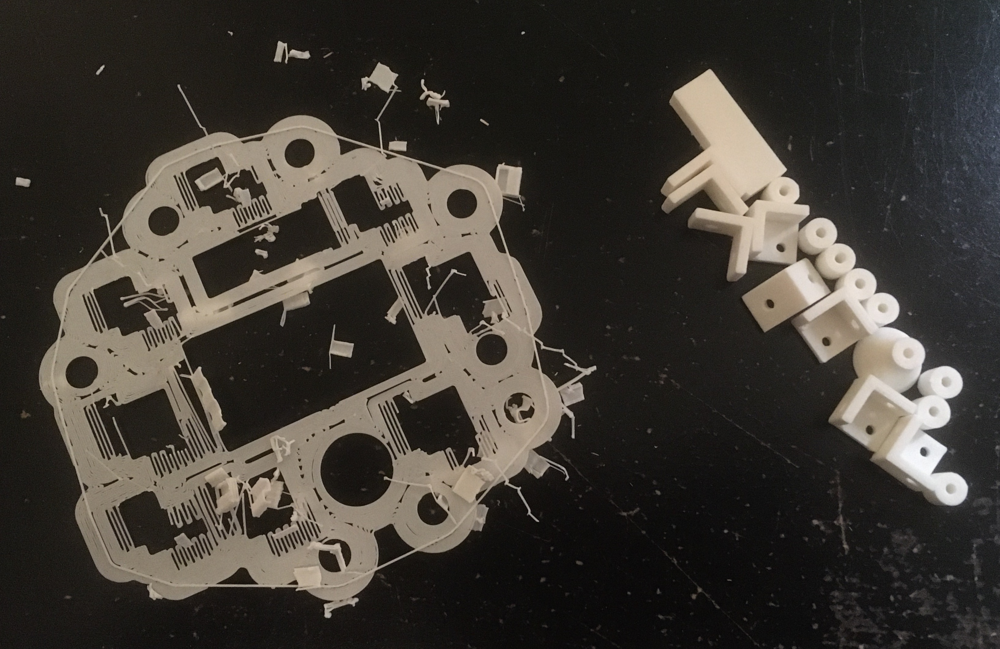Box Brackets And Flower Stem
Using a pair of tweezers and a small Phillips head screwdriver, I bolted the walls of the box together and secured the Arduino stop. I also hot glued the power switch in place on the side of the box. Below is a picture of the assembled box. The top face of the box rests on top of the 4 L-brackets, allowing for easy maintainence of the box components.
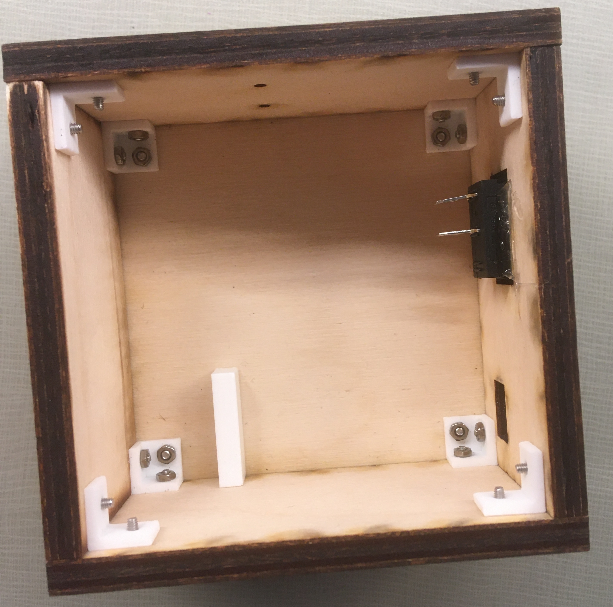Assembled Box
Demonstration of Battery Power Supply to Arduino
After flipping the battery wires and soldering two new wires to connect the battery circuit to the switch, I then placed the battery in the box and soldered the switch into the battery circuit. Below is a picture of the completed soldering job allowing the switch to be used to control the supply of power from the battery.
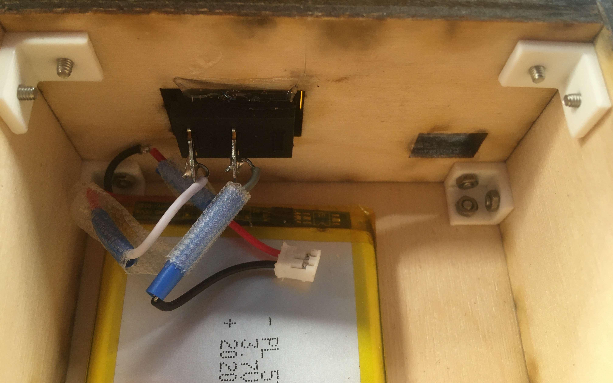Battery and Switch
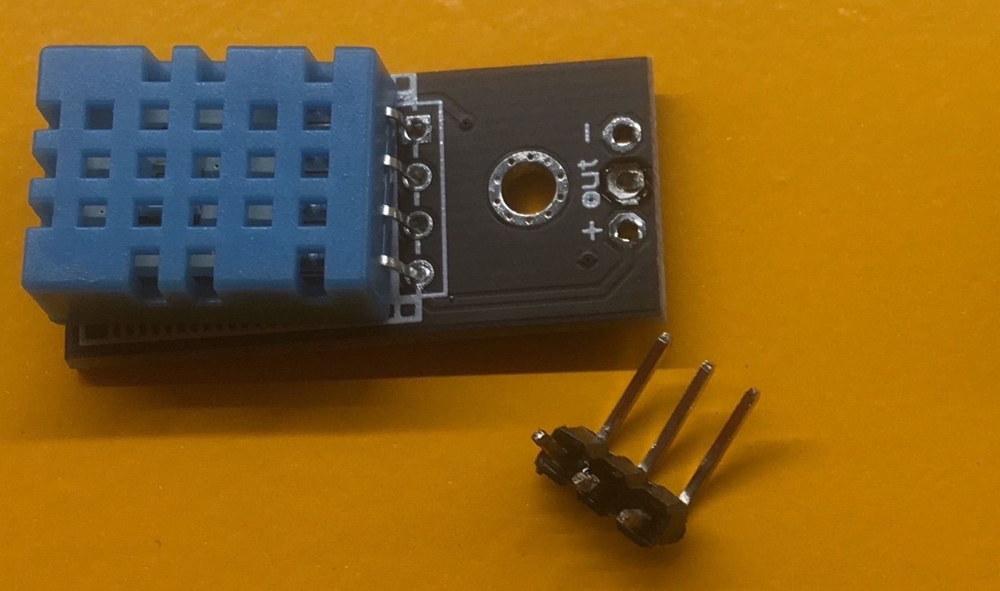 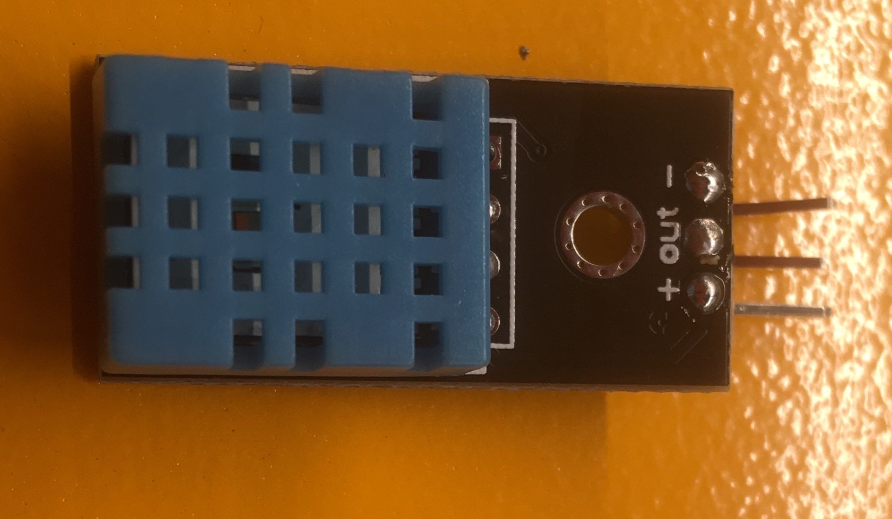Soldering Humidity Sensor Pins
I also soldered these wires together
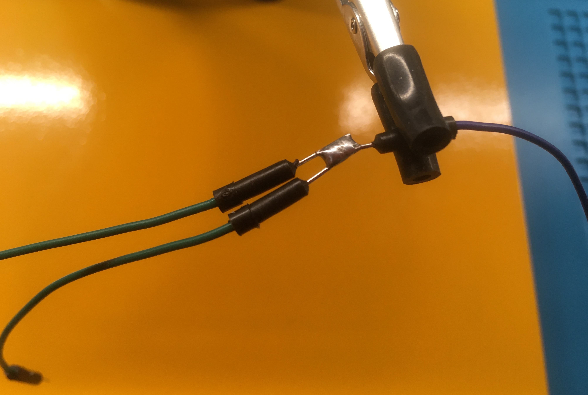Soldering Ground Wires
Blah blah blah blah blah blah blah blah
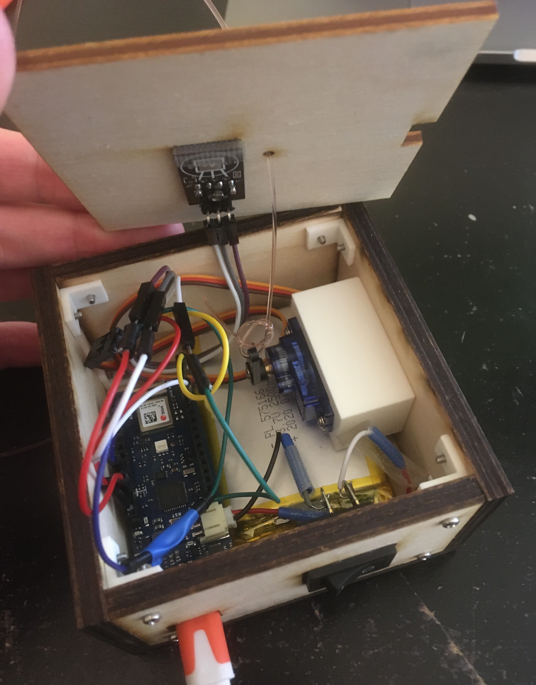Box with Electronics

Box with Electronics and Tape to Hold Wires In Place
Challenges
Blah blah blah blah blah blah blah blah

Snow Biking